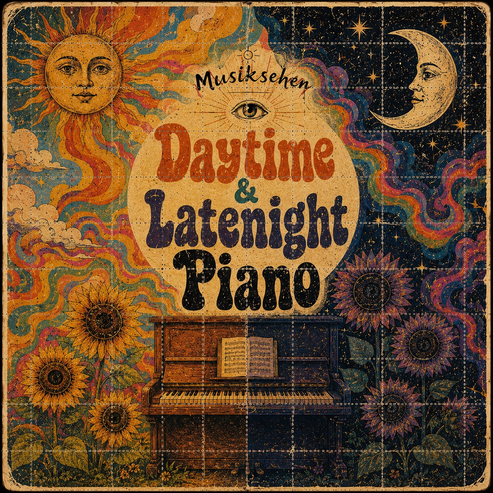

Daytime & Latenight Piano
Single von Musiksehen · 5. Oktober 2026

Streaming
Jetzt anhören
Eine Veröffentlichung von Musiksehen, dem Musikprojekt von Thorsten Baierl.
Single von Musiksehen · 5. Oktober 2026

Eine Veröffentlichung von Musiksehen, dem Musikprojekt von Thorsten Baierl.